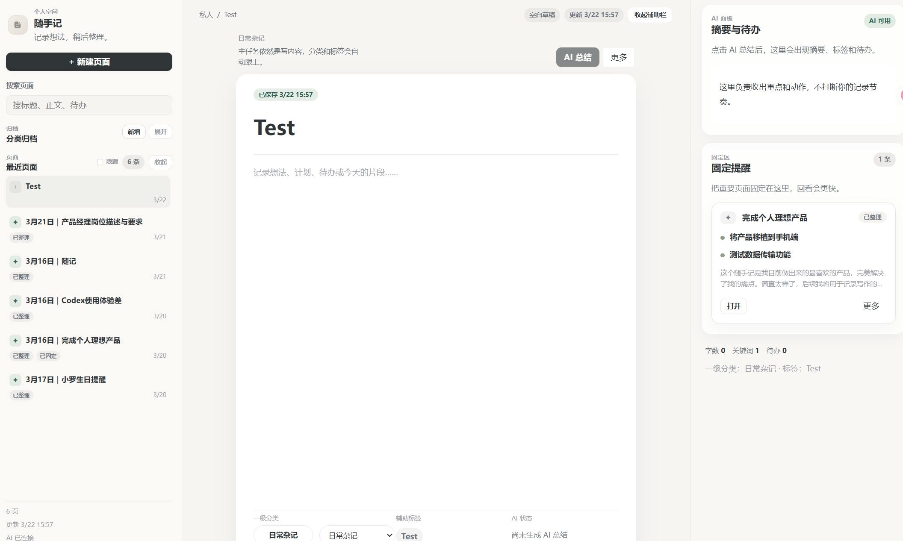

Back to Index

随手记
一个从多元录入到 AI 整理的本地优先笔记工具，支持 OCR 录入与智能摘要处理，实现「录入 → 处理 → 输出」的完整链路。
Problem & Solution
Problem
碎片化的想法和资料散落在微信、备忘录、截图、语音里，事后找不到、没法整理、也无法形成积累。普通的笔记工具只解决了「存」，没有解决「处理」和「输出」。
Solution
围绕「录入 → 处理 → 输出」的完整流程设计，支持图片 OCR、语音转文字等多元录入，通过 AI 自动摘要与标签体系，让碎片信息变为可检索、可复用的知识资产。
Core Workflow
Step 01
多元录入
文字、图片、语音皆可快速记录，OCR 自动识别图片内容
Step 02
AI 整理
自动生成摘要、提取标签、建立笔记间关联
Step 03
结构化输出
按标签、时间、项目多维检索，支持导出
Key Interfaces

输入 / 记录界面
文字、图片多元录入，OCR 自动识别图片内容
AI 总结与结果展示
自动生成摘要、提取标签，建立笔记间关联
页面流程演示
从录入到 AI 整理的全流程操作演示
Core Features
-
多元录入 — 文字、图片、语音多种形式，支持剪贴板直接粘贴
-
OCR 识别 — Tesseract 引擎自动识别图片中的文字，可编辑修正
-
AI 摘要 — 接入大模型 API，对长文本自动生成结构化摘要
-
智能标签 — 基于内容分析自动建议分类标签，支持手动调整
My Contribution
Role
独立产品设计与全栈开发
Core Work
流程设计、后端架构、前端实现
Tech Stack
Flask + Tesseract + LLM API
Delivery
本地 Python 服务 + Web 前端
Technical Decisions
-
本地优先 — 所有数据存储在 SQLite，不上云，保护隐私
-
Flask 轻量后端 — 足够小的团队规模，不需要重型框架
-
AI 能力解耦 — LLM API 调用独立封装，方便后续切换模型
Reflection
What Worked
- OCR + AI 摘要的组合在实际使用中大幅节省了整理时间
- 本地优先策略让用户对数据完全可控
- 标签体系支撑了半年后的功能迭代
Next Steps
- 图片较多时存储体积增长过快，需要压缩或 CDN 方案
- 搜索能力弱，中文分词精度不足
- 缺乏移动端适配，录入体验受限